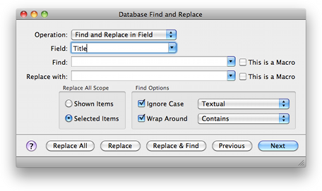

Find and Replace Find and Replace
Find and Replace Find and ReplaceBibDesk supports Find and Replace operations on bibliographies, either on the entire file or selected items. Use the "Database Find and Replace..." item of the "Edit" menu (key shortcut ⇧⌘F ) to show the find panel.

In this panel, you can enter the name of a field to search (such as Author or Title), and choose whether the search is case-sensitive and whether it searches only the current selection or all items in the current groups. The "Find Next" button will highlight eachmatching reference in turn, and the "Replace & Find" button will replace the text in the currently selected entry and highlight the next match. The "Replace All" button will replace all entries matching the search, either in the current selection or in all the displayed items (depending on the check box).
Note that this feature is complementary to the Quick Search feature, and does not replace it. For instance, the Find and Replace panel will not match cross-referenced (inherited) fields, and does not strip accents or braces. Further, searching by "All Fields" is not possible at this time, since it doesn't make sense in the context of the Find and Replace operation.
This panel also allows you to set the value of a field for all (selected) items at once. The field will be added if necessary. Check "Overwrite or Add Field" from the "Operation" popup, and enter the value to set in the "Replace with" field. Check "Set empty fields" to set this value for empty fields, uncheck this to only overwrite non-empty fields. Then hit the "Replace All" button to set this field in all the currently selected or displayed items (depending on your settings). You can similarly add a prefix or a suffix to all (selected) fields, when you choose the appropriate item from the "Operation" popup.
The Find and Replace panel also supports Perl-compatible regular expressions, via the PCRE library (see http://www.pcre.org/pcre.txt for the manual pages). If you are unfamiliar with regular expressions, they are a very powerful tool for matching patterns in text. Numerous resources are available on the internet for learning regular expressions, such as this one: http://www.anybrowser.org/bbedit/grep.shtml.
Searching for BibTeX macros is also supported via the `This is a Macro' checkbox next to the Find and Replace text boxes. For instance, if you have defined `@string{jhe = "Journal of Hydraulic Engineering"}' in your file, but decide to replace "jhe" with "j-hydeng", you could search the "Journal" field for "jhe" as a macro, and replace it with "j-hydeng" as a macro.
Here is a slightly more advanced example. Suppose all of your BibTeX entries have a "Year" field such as `Year = {1995}', but you want to replace these with `Year = 1995' (note the braces are removed in the second one). To do this in BibDesk's editor, you would open each entry, select the "Year" field, edit as raw BibTeX, and remove the surrounding braces. Using the Find panel, you could do the following, using the regular expression search option:
Find String: `([0-9]+)' (uncheck "This is a Macro") Replace With: `$0' (check "This is a Macro") |
This will set all of your "Year" fields containing one or more digits 0-9 to a number. Since the $0 backreference matches the entire pattern captured in the "Find" operation, you are just reinserting the previous value as a macro value.
Another useful example is searching for "Journal of Geophysical Research" as a non-macro, and replace it with "jgr" as a macro, now that BibDesk has full macro support (See section BibTeX Intro for more information on BibTeX macros). Regular expressions would not be necessary for this operation.